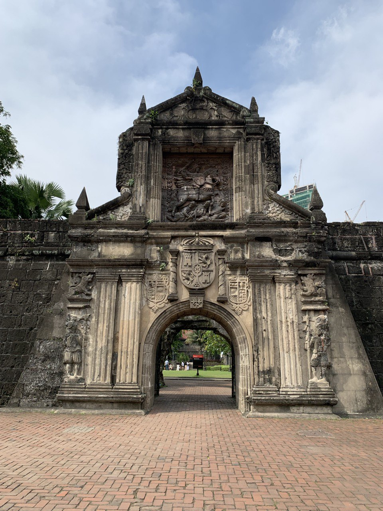
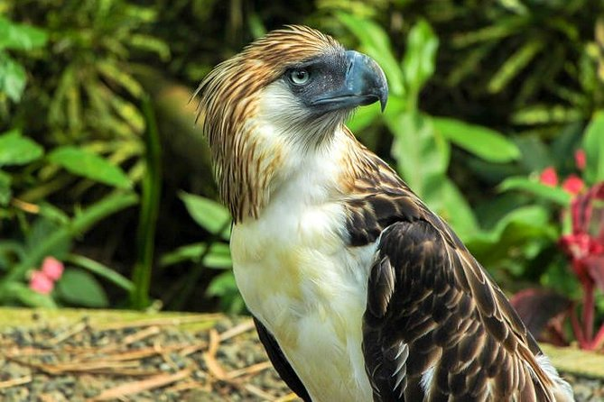

Handa ka na bang tuklasin ang mga yaman ng Pilipinas? The Philippines, a vibrant tapestry of history, adventure, and natural beauty, invites you to explore its iconic treasures scattered across its three island groups—Luzon, Visayas, and Mindanao. Imagine wandering through the cobblestone streets of Luzon's Intramuros, a living museum of Spanish colonial grandeur. Then, dive into the sun-soaked paradise of Boracay in the Visayas, where powdery white sand and turquoise waters create a postcard-perfect escape. Finally, journey to Mindanao’s heart, where the awe-inspiring Philippine Eagle Center in Davao brings you face-to-face with one of the world’s rarest and most powerful birds. Each destination tells a story, ready for you to discover.
Intramuros
From the historic island of Luzon, Intramuros stands as a timeless fortress city, echoing the rich colonial past of the Philippines. Known as the "Walled City," this iconic district in Manila was the center of Spanish rule for over three centuries. Enclosed by thick stone walls, Intramuros houses ancient churches, cobbled streets, and museums that narrate the tale of the country's journey through colonization and independence. Walking through its gates, visitors are transported back in time, experiencing a blend of Spanish architecture and Filipino heritage. Intramuros remains a must-visit destination for history enthusiasts and cultural explorers alike.
Boracay Beach

From the heart of the Visayas, Boracay shines as one of the Philippines' most famous tropical paradises. Known for its powdery white sand beaches and crystal-clear turquoise waters, this small island has become a world-renowned destination for beach lovers and adventure seekers. Beyond its stunning shores, Boracay offers a vibrant nightlife, a range of water sports, and breathtaking sunsets that paint the horizon with brilliant hues. Whether it's relaxing by the beach or exploring the island's natural beauty, Boracay embodies the perfect escape for travelers seeking both excitement and serenity in the Visayas region.
Philippine Eagle Center
From the lush landscapes of Mindanao, the Philippine Eagle Center stands as a sanctuary dedicated to the conservation of the critically endangered Philippine Eagle. Located in Davao City, this center plays a vital role in preserving the country's national bird, also known as the "Haribon" or "King of Birds," through breeding, rehabilitation, and education programs. Nestled within a forest-like setting, the center offers visitors a chance to witness the majestic eagles up close while learning about efforts to protect these iconic raptors and their natural habitats. It’s a symbol of the rich biodiversity that thrives in Mindanao’s expansive wilderness.